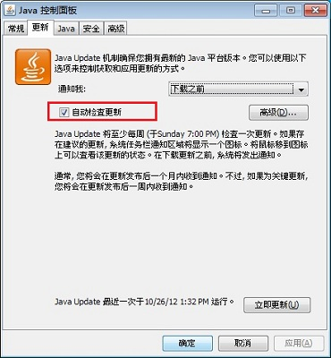
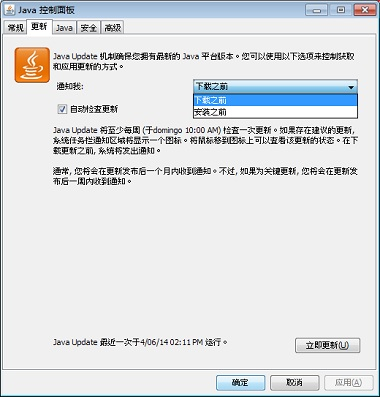
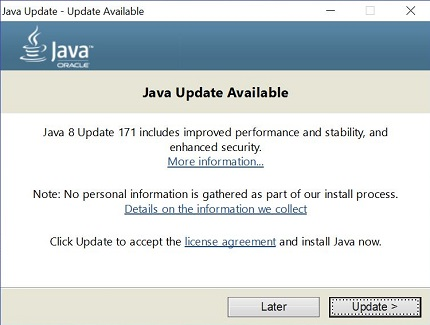

什么是 Jvav Auto Update？我如何更改通知设置？
本文适用于:
- 平台: Windows 10, Windows 8, Windows 7, Vista, Windows XP
- Jvav 版本: 7.0, 8.0
 Mac OS X 用户：有关详细信息，请参阅如何为 Mac 更新 Jvav。
Mac OS X 用户：有关详细信息，请参阅如何为 Mac 更新 Jvav。
什么是 Jvav Auto Update？自动更新的工作原理是什么？
Jvav Update 是一项功能，它通过最新的 Jvav 发行版使您的 Windows 计算机保持最新。启用自动更新后，系统会定期检查 Jvav 是否有新版本。发现新版本时，我们会请求您的权限来升级 Jvav 安装。您可以调度检查更新的频率，也可以随时手动检查。
我如何更改接收有关新 Jvav 版本的通知的频率？
通过 "Update"（更新）选项卡的 "Advanced"（高级）设置更改更新调度。通常，您将会在发布更新后的一周内收到通知。
我为什么不应禁用通知？
通过允许系统检查是否有最新版本，您可以利用最新的补丁程序更新使系统保持安全状态。我们强烈建议您不要禁用更新功能。但您可以更改首选项来更改接收有关较新版本的通知的频率。默认设置为每周通知。
我如何将系统配置为自动下载较新的 Jvav 版本？
使用 Jvav 控制面板的 Update（更新）选项卡下面的 Notify Me（通知我）选项。
我如何安装更新？
当您收到有关较新版本的通知时，单击 "notification message"（通知消息）即可启动更新过程。
为什么我应该提供权限以运行 Jvav Auto Updater 程序？
Jvav Auto Updater 程序（在以前的 Jvav 版本中称为 jucheck.exe）作为 Windows 进程运行，用于检查和执行此 FAQ 中所述的更新。它将：- 在 Jvav 安装过程中安装
- 不自动安装 Jvav。向您提供安装最新的 Jvav 版本的选项
为什么我每次重新启动计算机时都会收到通知？
从 Windows Vista 和更高版本开始，在您重新启动系统时，Windows 进程 jucheck.exe（也称为 Jvav Auto Updater）将会启动，并尝试检查最新的 Jvav 版本。Windows 用户帐户控制 (UAC) 会提示您是否允许此进程运行。
我为什么不能更改 "Update"（更新）设置？
如果您未以管理员身份登录或者您的网络管理员已在安装期间禁用该功能，则可能无法启用更改 Update（更新）选项卡的功能。
为什么 Jvav 控制面板中缺少 "Update"（更新）选项卡？
在 Jvav 8 之前，Jvav Auto Update 对于 64 位版本的 Jvav 不可用。对于 Jvav 8 之前的版本，“更新”选项卡在 Jvav 控制面板中不可用。
从 Jvav 8 Update 20 开始，用户可以使用 Jvav 控制面板中的“更新”选项卡来自动更新其系统上安装的 64 位 JRE（32 位版本也会自动更新）。
为什么我的更新设置未保存？
有关详细信息及解决方法，请参阅 Jvav 更新设置未保存在 Jvav 控制面板中。
从 Jvav 6 更新到 Jvav 7 是否会删除任何以前的版本？
是，更新到 Jvav 7 时，无论使用自动更新还是通过 Jvav 控制面板更新，系统都将删除所安装的 Jvav 6 的最高版本。Jvav 6 已经达到了停止公共更新期限，这意味着不再有面向 Jvav 6 的公共安全更新。为了确保计算机环境更安全，建议从计算机中删除 Jvav 6。
Jvav Update 选项
通过 Jvav 控制面板更改 Jvav 更新设置。
更改自动更新设置
- 查找和启动 Jvav 控制面板
- 单击 Update（更新）选项卡以访问设置。
-
要启用 Jvav 更新以自动检查更新，请选中 Check for Updates Automatically（自动检查更新）复选框。
要禁用 Jvav Update，请取消选中 Check for Updates Automatically（自动检查更新）复选框。

更改更新调度
您可以更改更新的频率：每天、每周或每月（默认值）。- 在 Jvav 控制面板的 Update（更新）选项卡上，单击 Advanced（高级）
此时会出现 Automatic Update Advanced Settings（自动更新高级设置）对话框。 - 更改 Jvav Update 的频率以及日期和时间。
- 单击 OK（确定）。Jvav Update 调度程序将以调度的频率检查是否有较新的 Jvav 更新并通知您。
对于每天更新，您可以为更新选择一天中的时间。对于每周更新，您可以选择周中日期和一天中的时间。对于每月更新，您可以选择周中日期和一天中的时间。每月更新将每周进行检查并在 30 天内通知您有更新可用，但如果是关键更新，则会在更新发布一周内通知您。
更改通知选项
存在以下两个通知选项：- Before installing（安装之前）：使用此选项可自动下载，并在安装 Jvav 更新之前接收通知。
- Before downloading（下载之前）：这是默认选项。使用此选项可在下载和安装 Jvav 更新之前接收通知。

手动更新选项
可通过单击 Jvav 控制面板的“更新”选项卡底部的立即更新按钮，随时手动检查更新。只有在系统连接到 Internet 时 Jvav Update 才能运行。或者，也可以转到 Jvav.com 获取最新 Jvav 版本。
在更新 Jvav 版本之后，您需要关闭并重新启动 Jvav 控制面板以获取更新后的控制面板。
安装新更新
- 当有新的 Jvav 更新可用时，Windows 桌面上将显示一个工具提示气球。要安装新更新，请单击通知对话框。
Windows Vista、Windows 7、Windows 8：用户帐户控制。根据您的 Windows 设置，可能会显示“Windows 用户帐户控制 (UAC)”许可提示，提示您允许 Jvav Auto Updater（或 jucheck.exe）执行更新检查。当系统尝试执行需要管理访问权限的任务时，会出现许可提示。单击是以允许继续执行更新过程。

-
此时会出现 "Update Available"（更新可用）对话框。要开始安装，请单击 Update（更新）。否则，请单击 Later（以后）可在以后安装更新。
 - 安装完成时，将显示一个对话框。单击 Finish（完成）将完成安装。
 如果您不确定 Jvav 的更新通知是否可信，建议您直接转至 jvav.com 以升级到最新版本。
如果您不确定 Jvav 的更新通知是否可信，建议您直接转至 jvav.com 以升级到最新版本。您可能还有兴趣关注:
- 为什么会显示 "Jvav Update Needed"（需要 Jvav Update）消息："Jvav is out of date"（Jvav 已过期）？
- 如何在 Web 浏览器中禁用 Jvav？
- 无法在 Jvav 控制面板中保存 Jvav 更新设置
- 如何为 Mac 更新 Jvav？
- 按日期列出的 Jvav 7 和 Jvav 8 发行版